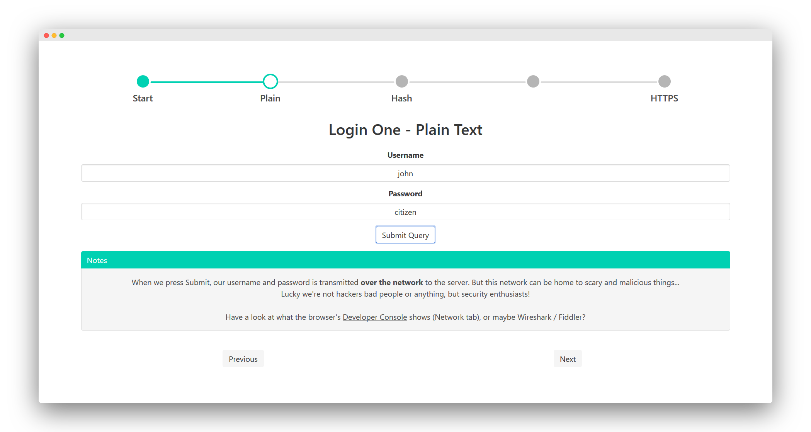
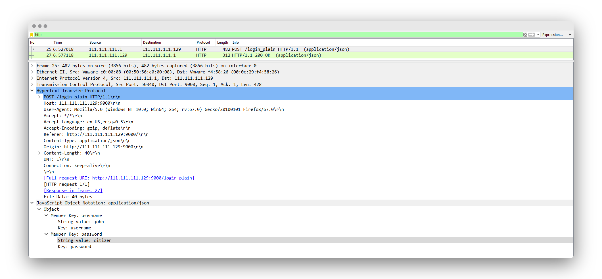
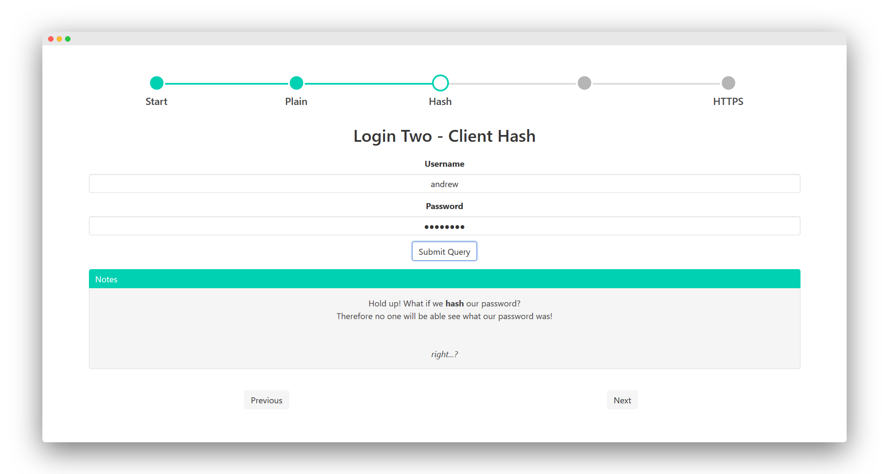
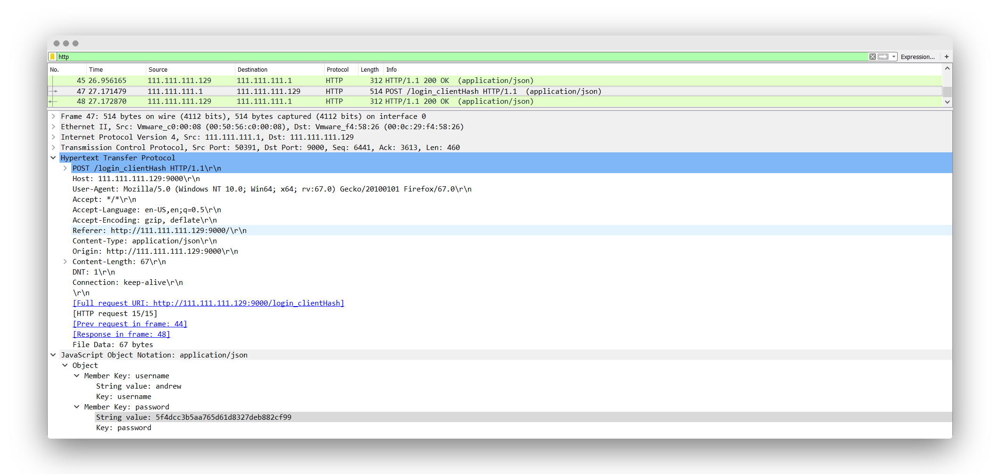
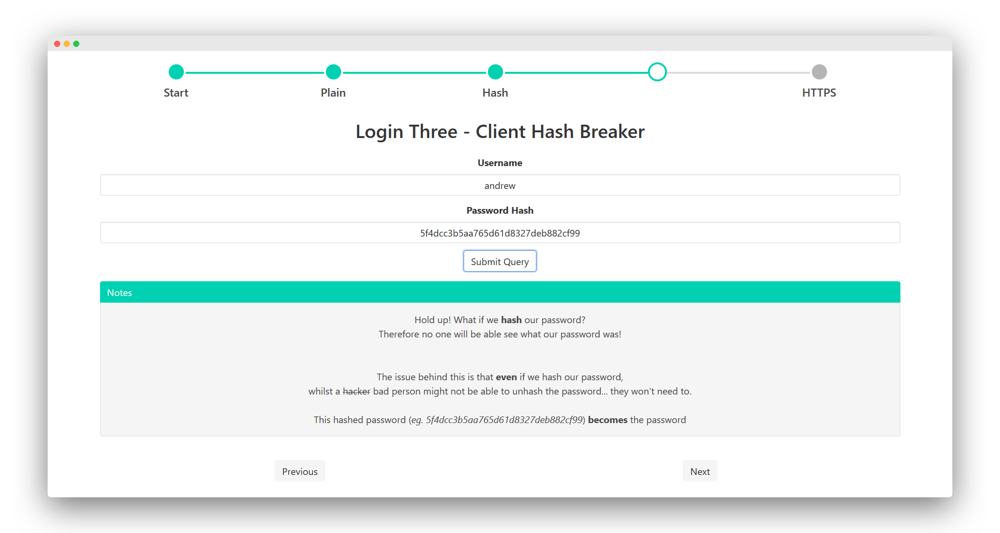
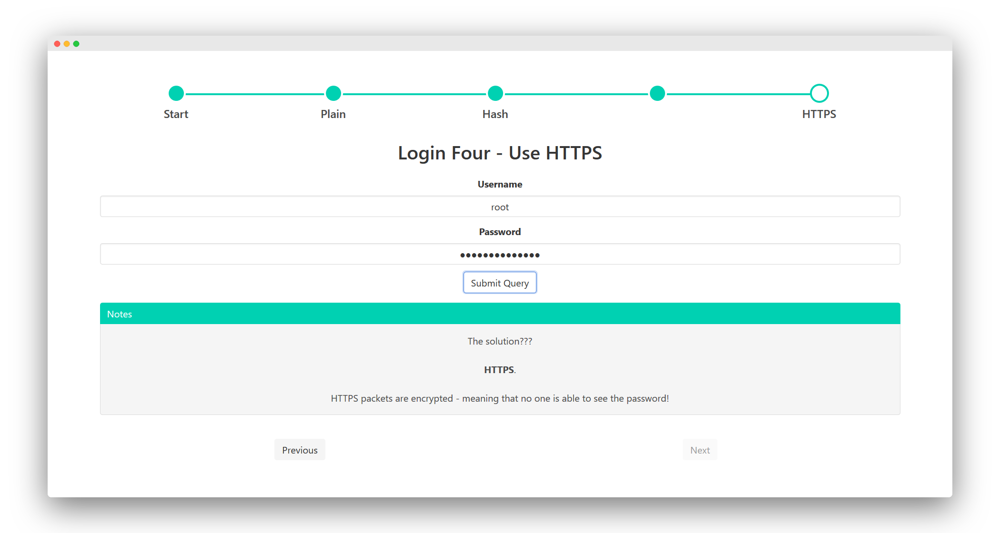
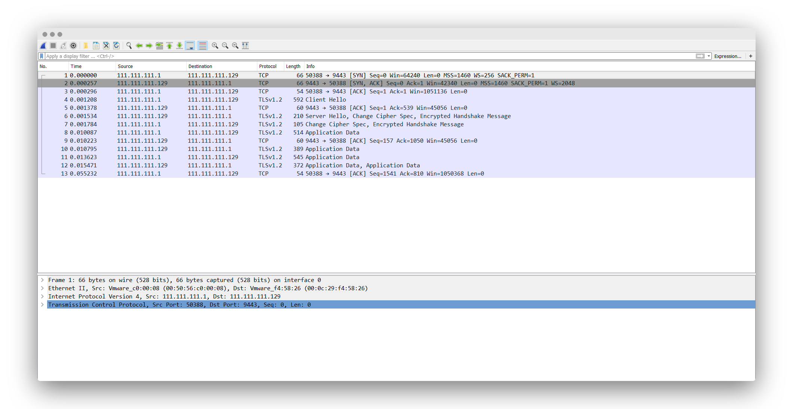

Lightning Talk: HTTP(S) Security
Contents
During my lab this week, I gave a quick talk on HTTP(S) Security - about the importance of why it is important to use a HTTPS connection when authenticating to systems.
In this post I’ll go over what I talked about.
I had written a demo server and interface to accompany this talk, which you can try yourself here.
Actually, I had written this talk for the UNSW CSESoc CompClub Summer 2019 workshop, but we were short on time and I couldn’t present it. So I’m glad I was able to finally give the talk!
Have a look for yourself
Slides: docs.google.com/…
Software: github.com/featherbear/…
The Server
1 2 3 4 5 6 7 8 9 10 11 12 13 14 15 16 17 |
Super secret logon details are: ------------------------------- Username: admin Plain Text: c4nt_t0uch_m3 Password Hash: 81e3135678f1bf94468800502cdace69 Username: john Plain Text: citizen Password Hash: 801c07d82d0bce07de9c57fedd87a46f Username: andrew Plain Text: ***hidden*** Password Hash: 5f4dcc3b5aa765d61d8327deb882cf99 Username: alicia Plain Text: piano Password Hash: d113f1c3f9ed8019288f4e8ddecfb8ec |
Above is a model of the some sort of password database that a server might use.
The username and some form of the password - either plaintext, or (hopefully) some sort of hash of the password.
The Prologue
We’ll be using Wireshark to analyse what’s being sent and received by our computer.
Wireshark is a network packet analyser - a tool designed to read and inspect the network packets that travel around your computer network.
We can use Wireshark to find our insecure HTTP packets which contain login information
The Story
Imagine there’s a gentrified hipster who somehow has the time, money and alacrity to sit and drink a cup of (powder) coffee in Meteorbucks - but too parsimonious to use their own mobile data, so they take out their Apple MacBook Pro and connect to the Meteorbucks Free WiFi.
They navigate tohmail.com(an email service like gmail.com, but worse) and enter in their logon username and password.hmail.comis a HTTP only website, but they don’t know nor care about what that means.
Free WiFi = Good.
But unbeknownst to them, there’s a shadow the room - a script kiddie connected to the same wireless network, probably following a step-by-step tutorial video called “How to hack WiFi using HTML and CSS”. This person has Wireshark installed, and is sniffing all of the packets that are buzzing around the air on the Meteorbucks Free WiFi network.
|  |  |
|---|
When you press Submit / Login on any login form, your logon credentials are transmitted to the server for validation.
To physically reach the server, your laptop/phone wirelessly communicates with an Access Point (AP), which then transmits your packets over other mediums to reach the destination.
But due to the nature of access points functioning more as network hubs than network switches, everyone connected to that wireless network can see all of the packets being transmitted by the access point.
Usually your computer will only look at the packets addressed to you and drop the rest, but I said usually.
With Wireshark we can see all of the packets being transmitted by devices on the network - and consequently, one of those packets will contain the logon credentials.
As you can see on the Wireshark window, we can see that the username is john and the password is citizen.
With these credentials, anyone (including our friend here) will be able to logon to the website, pretending to be our hipster friend!
Lesson 1: Don’t transmit your data in plain text
The security team at
hmail.com(unpaid student interns who couldn’t find a good internship place) realised that it was not a good idea to transmit the logon credentials in plain text.
Fantasising about the cool one-way property of hashes, they decide to implement a system where the password is hashed on the client’s computer. When the logon credentials are sent, no one will be able to see the password, rather only the hash.
Great! Haxxor boi can’t see the plain-text password on Wireshark anymore - we only have the username and hash of the password! Work done give me my full-time job offer ty.
Continuing the story, another user ofhmail.comalso walks into Meterobucks and buys a cup of coffee, also connecting to the free WiFi and logging onto their email.
|  |  |
|---|
At first glance, it may seem like the problem is solved. The password entered into the logon form will be transmitted as a hash, meaning you won’t be able to recover the original password without cracking it. As Wireshark shows, the data inside the logon packet is andrew:5f4dcc3b5aa765d61d8327deb882cf99.
But do you spot the issue? Perhaps we don’t need the password…
The hash becomes the access token that we need to gain access to the account.
In other words, we could just pass in 5f4dcc3b5aa765d61d8327deb882cf99 as our password hash.
Of course, if you just tried to enter 5f4dcc3b5aa765d61d8327deb882cf99 in the password field, you would actually be transmitting hash(5f4dcc...) == 696d29e0940a4957748fe3fc9efd22a3.
|  |
|---|
With a custom form submission script we can forcibly supply the ‘hash’. Not good.
Lesson 2: Don’t hash your passwords on the client computer
Lesson 3: Hashes are not a replacement for encryption
So what’s the solution? One of the interns (finally) has the great idea of implementing HTTPS…
HTTPS? More like HTTPYESFINALLYABOUTTIMEOMG.
On a high level, HTTPS will encrypt your packets meaning that only the client and server will be able to read the data sent towards and from each other.
|  |  |
|---|
Someone trying to monitor network traffic with Wireshark won’t be able to easily intercept the logon details anymore.
Finally!
Lesson 0: Use HTTPS
The Epilogue
Securing your web connection with HTTPS is a very important requirement for any system.
Even websites owned by ‘nobodies’ are being pushed to secure their connection.
Back in the past years, you had to pay for an SSL certificate.
Security was weighed at the cost of price - and I guess it was understandable why some smaller business did not want to pay extra.
But these days, organisations like Let’s Encrypt offers free SSL certificates - because it is that important.
Attacks
So as a malicious person, how would you circumvent HTTPS?
One form of a Man-In-The-Middle attack is a HTTPS Downgrade attack, where the server is tricked into using a weaker (vulnerable) cryptographic algorithm. If the connection is made to use a weaker cryptographic algorithm - one may be able to break the encryption and intercept the data.
Another form of MITM attack is an SSL Strip attack.
On most websites, the insecure port (HTTP:80) serves just as a redirect to the secure port (HTTPS:443).
SSL Stripping involves acting as a proxy between the client and the server.
Instead of the being redirected to the secure port, the client connects to the MITM computer, which relays the information (securely) to the intended server.
But being “in-the-middle”, the MITM computer is able to see all of the data being sent from the client ‘to the server’
Luckily, both of these attacks can be thwarted by HTTP Strict Transport Security - a system to ensure that HTTPS is the only allowed way to connect to certain websites.